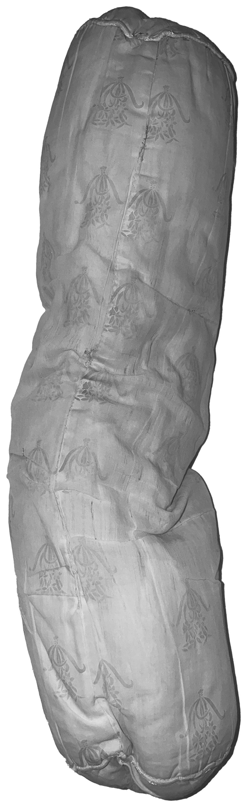

These are my battle scars, my stretch
marks. They tell me you still love me
and want me. The next time you're
insecure about your imperfections,
think about whether you value me any
less for mine. We've been through
many things together!
I've been on many adventures in this life.
I wish you could still take me places,
like how you did when you were younger.
It gets a little lonely when you’re away
on long vacations.
You named me Gendut when you were a child,
because at the time I seemed so large.
I'm a little less sturdy now, as some of my
stuffing has fallen out or lost its fluff,
but these stitches help keep me together.
This is where you would smell me when
you need comfort. I'm falling apart at
the seams here, stuffing exposed, but
but it’s only a reminder that I’ve
been well-loved.
I'm glad I could be there for you for
so many years. Thank you for choosing
me to be your lifelong pillow companion!
You've had many surgeries.
How do you feel about them?
What can I do to be a better owner?
What do you think of your name, Gendut?
Remind me why I named you that.
Do you feel sensitive here?
Thanks for the comfort you've provided me
over the years, and for always being
there for me!